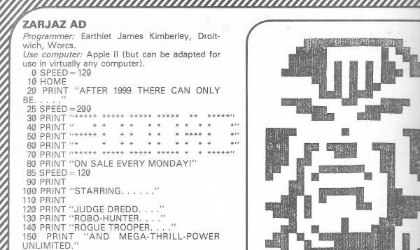

A home computer article series with early examples of digital art and various relatively simple Basic programs.
| Title | Parts | Pages | w indicates a wraparound coverCovers | Year(s) | Issues | Writer | Artist | Colourist | Letterer |
|---|---|---|---|---|---|---|---|---|---|
| Tharg's Mighty Micro Page | 1 | 1 | 0 | 1982 | 274 | Tharg the Mega-Programmer | computer art | [b&w] | n/a |
| Tharg's Mighty Micro Page | 1 | 1 | 0 | 1982 | 282 | Tharg the Mega-Programmer | computer art | [b&w] | n/a |
| Tharg's Mighty Micro Page | 1 | 1 | 0 | 1982 | 291 | Tharg the Mega-Programmer | computer art | [b&w] | n/a |
| Tharg's Mighty Micro Page | 1 | 1 | 0 | 1983 | 301 | Tharg the Mega-Programmer | computer art | [b&w] | n/a |
| Mighty Micro Page | 1 | 1 | 0 | 1983 | 312 | Tharg the Mega-Programmer | computer art | [b&w] | n/a |
| Mighty Micro Page | 1 | 1 | 0 | 1983 | 321 | Tharg the Mega-Programmer | computer art | [b&w] | n/a |
| Mighty Micro Page | 1 | 1 | 0 | 1983 | 327 | Tharg the Mega-Programmer | computer art | [b&w] | n/a |
| Tharg's Mighty Micro Pages | 1 | 2 | 0 | 1983 | 2KA'84 | Tharg the Cosmic Programmer | computer art | [b&w] | n/a |
| Mighty Micro Page | 1 | 1 | 0 | 1983 | 334 | Tharg the Mega-Programmer | computer art | [b&w] | n/a |
| Mighty Micro Page | 1 | 1 | 0 | 1983 | 347 | Tharg the Mega-Programmer | computer art | [b&w] | n/a |
| Mighty Micro Page | 1 | 1 | 0 | 1984 | 360 | Tharg the Mega-Programmer | computer art | [b&w] | n/a |
| Mighty Micro Page Extra | 1 | 1 | 0 | 1984 | 361 | Tharg the Mega-Programmer | computer art | [b&w] | n/a |
| Mighty Micro Page | 1 | 1 | 0 | 1984 | 372 | Tharg the Mega-Programmer | computer art | [b&w] | n/a |
| Mighty Micro Page (Ogham Special) | 1 | 1 | 0 | 1984 | 373 | Tharg the Mega-Programmer | computer art | [b&w] | n/a |
| Mighty Micro Page | 1 | 1 | 0 | 1984 | 386 | Tharg the Mega-Programmer | computer art | [b&w] | n/a |
| Mighty Micro Page | 1 | 1 | 0 | 1985 | 408 | Tharg the Mega-Programmer | computer art | [b&w] | n/a |
| year | episodes | pages |
| 1977 | 0 | 0 |
| 1978 | 0 | 0 |
| 1979 | 0 | 0 |
| 1980 | 0 | 0 |
| 1981 | 0 | 0 |
| 1982 | 3 | 3 |
| 1983 | 7 | 8 |
| 1984 | 5 | 5 |
| 1985 | 1 | 1 |
| 1986 | 0 | 0 |
| 1987 | 0 | 0 |
| 1988 | 0 | 0 |
| 1989 | 0 | 0 |
| 1990 | 0 | 0 |
| 1991 | 0 | 0 |
| 1992 | 0 | 0 |
| 1993 | 0 | 0 |
| 1994 | 0 | 0 |
| 1995 | 0 | 0 |
| 1996 | 0 | 0 |
| 1997 | 0 | 0 |